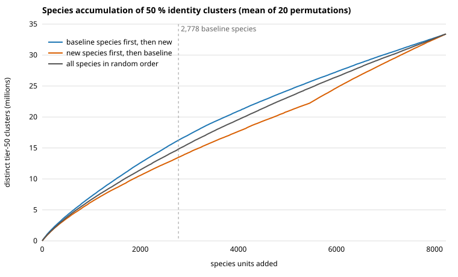

Delta Gain: findings synthesis
How much new protein-level information newly annotated fungal genomes add
Section 5.1 reports that enriched Pfam families show new genomes adding far more novelty than an order-matched baseline null — +14.6 to +14.9 points at 70 % identity, against roughly +0.4 to +2.2 for CAZy, MEROPS and random-Pfam controls. It is the largest effect in the document.
A later test shows that most of that excess is where the genomes were deposited, not what is in them. Two UW-Madison Y1000+ BioProjects contribute 1,033 genomes — 5.8 % of the new side — and they carry about three quarters of the enriched-family novelty. Their assemblies went to GenBank in 2024 but their proteins went to Figshare, so the proteins are public and yet absent from the nr baseline this analysis screens against. Counting them as known turns the enriched families’ +24.8-point excess over the controls into a 23.1-point deficit.
Read the test → The enriched-Pfam signal is mostly Y1000+ deposition
What that test does not do is re-run the order-matched null with those genomes moved into the baseline, so the +14.6 figure below has not been recomputed — it has been shown to rest on a confound. The other family sets are far less affected: the median family loses 86.6 % of its novelty among the enriched families and 0.8 % among the random controls. Sections 3 and 4, which are whole-proteome rather than family-level, are not touched by this.
A working analysis, not a finished study. Every result is computational and nothing here has been tested at the bench. Section 7 states the limitations and section 8 lists what was deliberately not done.
This page reproduces docs/FINDINGS.md from the pipeline repository 1KFG/delta-gain verbatim, at pinned commit 91eb5fe of 2026-11-08. It is reproduced rather than copied so that there is only one source of truth, and both the commit and the file’s checksum are pinned in reports/bin/fetch_external.sh, so the text below cannot change without the fetch failing.
The document refers to its own plans, scripts and results directories, which live in that repository and on lab storage; those references are left as written. Because it is reproduced verbatim, the qualification above appears only here, and not at section 5.1 where the affected number sits.
Status: complete draft for collaborator review, 2026-11-08 (includes the species accumulation, secretome / copy-number and parameter-sensitivity analyses). Source of truth for every number is docs/DELTA_GAIN_PLAN.md (§11 status log) and docs/FAMILY_DIVERSITY_PLAN.md (§10 status table). Scripts are in bin/, launchers in launch/, results under results/ of the delta-gain-fungi working directory (HPCC, /bigdata/stajichlab/shared/projects/BFD/DeltaGain_Fungi). This file is the narrative; if it and the plans disagree, the plans win (they carry the job ids and exact settings).
1. The question and the short answer
How much NEW protein-level information do newly annotated fungal genomes add, compared with what was already known from previously annotated fungal genomes, controlling for the many re-sequenced strains of the same species?
Baseline = 5,703 genomes with a prior NCBI annotation. New = 17,864 matched genomes without one (183.1 M proteins). About 60 % of new genomes are strains of species already in the baseline.
Short answer.
- Whole-proteome view. 50.2 / 29.2 / 22.4 % of new proteins fall in clusters with no baseline member at 95 / 70 / 50 % identity. That protein-weighted headline understates novelty per species and is dominated by heavily resequenced species. Counted once per species about 39 % of proteins are novel at 50 % identity, and the novelty comes from new species and genera, not from new strains.
- Strains add little. Strains of baseline species are 60 % of new proteins but 36 % of the novel ones (13.3 % novel at 50 %, median genome 5 %). New species in a baseline genus are 27.6 % novel; new genus or higher 57-63 %.
- Most novel proteins are still homologs of known families. Of the survivor clusters seen in 5 or more genomes, 79 % have a detectable baseline homolog by sensitive search; 10.7 % have none. Among all 12.2 M single-genome clusters 63 % have a homolog and 21 % none.
- Novel protein mass is species-restricted. 82 % of survivor clusters (61 % of survivor proteins) come from one species.
- Within a family, new genomes add about what the same number of baseline genomes would. For typical CAZy, MEROPS, random Pfam and secondary-metabolism backbone families the extra is about 1-3 percentage points. Pfam families chosen for being enriched in new genomes (mostly Saccharomycotina yeast families) show about +15 points, and that replicates in independent species.
- Unseen clades are not special. New genomes from orders with no baseline genome are no more novel than a typical held-out baseline order (pooled and class-matched nulls, about -2 points at 70 %).
- Artefacts do not explain the result. Predictor mismatch (NCBI vs BFD gene models) adds 1.5-3 points; contamination-flagged genomes supply 8.2 % of novel protein mass; annotated transposons about 1 %; there is no excess of prokaryote-like best hits among novel proteins.
- Novel family members are often degenerate or partial. Novel GH18 and S08 regions are shorter and more often miss catalytic residues; novel S08 hits include probable carboxylase false hits. These are not evidence of new catalytic function.
- The fungal 50 % cluster pangenome is not saturated. Adding species in random order, each further species still contributes about 2.7-4.5 thousand new clusters. A new species adds about five times more clusters per genome than a resequenced strain of a known species (about 1,870 vs 350).
- No secretome or expansion signal. New genomes do not carry more signal peptides or small-secreted-protein candidates than same-order baseline genomes, survivors are not enriched for them, and CAZy/MEROPS copy number changes are small and balanced (19 families expand, 23 contract per 1,000 proteins).
- The family result is robust. It does not change with coverage threshold, coverage mode or Pfam region definition (five families, sensitivity run).
2. Design in brief
| Element | What was done |
|---|---|
| Baseline / new | genome_classes.tsv: 5,703 baseline, 17,864 new matched genomes (196 not annotated and 2 ambiguous-tag genomes kept out of headline numbers). |
| Funnel | Nested MMseqs2 linclust over BASE (NCBI proteins) and NEW (BFD proteins) at 95 % (90 % cov), 70 % and 50 % identity (80 % bidirectional coverage). A new protein is novel at a tier if its cluster has no baseline member. Survivors = novel at 50 %. |
| Family walk | Regions of a Pfam / CAZy / MEROPS family (or subfamily) from the BFD re-annotation of both groups (no predictor confound), clustered inside the family at 90 / 70 / 50 / 30 %. Novel region = cluster with no baseline member. |
| Nulls | F3: equally many same-order baseline genomes (baseline-vs-baseline). F3b: leave one whole order out. F3c: class-matched version for orders with no baseline genome. Genome-level and species-collapsed variants, 200 draws. |
| Controls | Predictor control; rank decomposition; rarefaction to k genomes per species; size-matched random-Pfam control; species-half split-sample test; contamination/TE triage; quality (BUSCO, N50) within-order diagnostics. |
| Survivor characterisation | Pfam/CAZy/MEROPS labels, taxonomic breadth, sensitive MMseqs2 search (-s 6.0) against the 16.45 M baseline-known tier-50 representatives, profile search of no-hit clusters, Swiss-Prot taxonomy screen, ESMFold pilot. |
3. Whole-proteome funnel
3.1 Headline and spread
| Tier | Novel new proteins | Fraction |
|---|---|---|
| 95 % id / 90 % cov | 91,857,334 | 50.2 % |
| 70 % | 53,498,892 | 29.2 % |
| 50 % | 41,042,274 | 22.4 % |
Per genome (17,864 genomes) the median fraction novel is 35.6 / 14.1 / 10.2 % and the 90th percentile 99.5 / 82.1 / 62.0 %: the spread separates strains of baseline species from new-taxon genomes.
3.3 Controlling for resequencing
Rarefying to k random genomes per species (50 draws, protein-weighted), novel fraction at 95 / 70 / 50 %: k = 1 76.9 / 49.9 / 37.6; k = 2 74.6 / 47.5 / 35.8; k = 5 70.5 / 44.0 / 33.1; k = 10 67.1 / 41.3 / 31.2; all genomes 50.2 / 29.2 / 22.4. One value per species (median over its genomes): 5,454 species, mean novel 78.7 / 52.4 / 39.4 %; the 4,632 species absent from the baseline 85.6 / 58.3 / 43.7 %. The per-species view (about 40 % at 50 %) is the better measure of added sequence diversity.
3.3b Species accumulation of 50 % clusters (E4)
All 23,567 genomes with annotated proteins (237 M distinct genome x tier-50 cluster pairs, 33.4 M clusters) were grouped into species units: 2,778 baseline species, 822 new-genome groups of species that also have a baseline genome (N_known, about 10.7 k mostly resequenced genomes) and 4,632 new species (N_newsp, about 7.2 k genomes). Units were added in random order (20 permutations per ordering) and each cluster was credited to the first unit that contains it (bin/accumulation.py, results/accumulation/; figure figures/E4_accumulation.svg).

- No saturation. The curve is close to linear. After all 2,778 baseline species (16.25 M clusters) each further species still adds about 4.0-4.5 k clusters at the start of the new units (positions 2,776-3,200), declining only to about 2.7 k for the last 230 new species. The 50 % cluster pangenome of the fungal kingdom is open at this sampling depth.
- Baseline-first ordering. New units add 17.14 M clusters absent from the baseline (matches the 17.10 M survivor clusters counted independently; the small gap is clusters held only by genomes outside the two classes): 3.72 M from the 822 resequenced-species groups (about 350 clusters per genome) and 13.42 M from the 4,632 new species (about 1,870 clusters per genome). Strains of known species add little per genome; new species add roughly five times more.
- New-first ordering (contrast). The first 2,778 random new species cover 13.5 M clusters, 17 % fewer than the 2,778 baseline species (16.2 M). The 5,454 new species together cover 22.2 M clusters, and the baseline still adds 11.2 M clusters after all new genomes (about 4.0 k per baseline species). The baseline therefore carries a large share of sequence space that the new genomes do not reproduce.
- Caveat. Baseline proteins are NCBI gene models and new proteins are BFD models, so cluster counts per species include the 1.5-3 point predictor effect and differences in proteome size and completeness; the curves describe species sampling of 50 % clusters, not new families (most clusters are small and lineage-restricted, see section 4).
3.4 Artefact checks
- Predictor mismatch. 300 baseline genomes scored as NCBI vs BFD annotations against the same 1,000-genome reference: novel fraction 57.3 -> 60.0 / 34.5 -> 35.8 / 25.7 -> 26.8 % (95 / 70 / 50 %). The gene-model difference inflates novelty by about 1.5-3 points.
- Contamination and transposons. Genomes with GC more than 8 points from their order median (1,067) or BUSCO < 50 (322) are 6-7 % of new genomes and give 8.2 % of novel protein mass. Annotated TE domains label about 1 % of survivor proteins.
- Horizontal transfer / contamination screen. Best Swiss-Prot hit of survivor representatives (metagenome-bin genomes excluded) is prokaryotic for 4.1-4.8 % of survivors vs 5.2 % of background proteins; at >= 40 % identity 1.0-1.3 % vs 1.3 %. No enrichment. This is a screen only (< 50 % of survivors have a Swiss-Prot hit; no phylogeny).
4. What the survivors are
4.1 Labels and breadth
17,095,910 survivor clusters (41.0 M proteins): 12.2 M seen in one genome, 4.86 M in two or more, 1.25 M in five or more, 184 k in 20 or more. Most still carry a known Pfam domain (41.6 % single-genome, 51.2 % 2-4 genomes, 55.7 % 5-19, 35.9 % >= 20 genomes); the most frequent are protein kinase, MFS, Zn2Cys6 and cytochrome P450 domains, i.e. divergent members of large families. CAZy and MEROPS label 1-2 %.
Taxonomic breadth: 82 % of clusters (61 % of proteins) come from a single species; only 3.04 M clusters span two or more species and 0.90 M span two or more genera. Among clusters in 5 or more genomes: 33 % one species, 42 % one genus, 16 % one family, 4 % one order, 5 % multi-order.
4.2 Sensitive search against the baseline-known clusters
Clusters (by cluster count) by genome-count class:
| Survivor class | Clusters searched | Homolog | Close, low identity | Distant | No hit |
|---|---|---|---|---|---|
| 5 or more genomes | 1,254,423 | 79.3 % | 8.5 % | 1.6 % | 10.7 % (133,599) |
| 2-4 genomes | 3,602,662 | 74.2 % | 11.1 % | 1.9 % | 12.8 % (460,890) |
| 1 genome | 12,238,825 | 63.0 % | 12.8 % | 2.9 % | 21.3 % (2,602,543) |
The no-hit share rises as the number of genomes falls, as expected if no-hit clusters are enriched for gene-model artefacts and recent lineage-specific genes. A profile search of the 133,599 no-hit clusters of the 5+ class (re-clustered at 30 % into 107,819 profile clusters) found baseline hits for 10.2 % of profile clusters (12.9 % of proteins); 2.14 M proteins remain without any detectable baseline homolog.
4.3 Structure pilot
ESMFold (single sequence) on 400 representatives of no-hit profile clusters vs 400 of profile clusters that did gain a baseline hit: mean pLDDT (0-1) 0.372 vs 0.440; share with pLDDT >= 0.5: 8.8 % vs 27.3 %; >= 0.7: 0.8 % vs 6.3 %. Novel no-hit proteins are predicted with lower confidence, but both sets are low and length differs (150 vs 190 aa), so this fits disorder, orphan or spurious-model status without proving it. Not run at full scale.
4.4 Secretome and lineage-specific expansions (E7)
Species-level units (genomes of one species and class averaged), contrast within order (71 orders with at least 3 units of each class), permutation test inside orders. Details and thresholds: docs/E7_RESULTS.md.
- Secretome. Whole-proteome signal-peptide fraction is 7.64 % in new vs 7.71 % in baseline genomes; small-secreted-protein (SSP) candidates (signal peptide, <= 300 aa, >= 4 Cys, no GPI anchor, no transmembrane helix beyond a signal anchor) are 1.369 % vs 1.359 %. Within order, new genomes carry slightly fewer signal peptides (-0.14 points, p 0.0003) and SSP candidates (-0.04 points, p 0.0003); the effect comes from new species (-0.045 points), not from new strains of known species (+0.001, p 0.94). The SSP rule is a heuristic, not an effector call.
- Survivors are not enriched for secreted proteins. Observed / expected SSP among survivor representatives (expected from the same genome’s rate): 0.88 (1 genome), 0.98 (2-4), 1.01 (5-19), 0.79 (20 or more); signal-peptide obs/exp 0.72-0.90.
- Copy number. For 323 CAZy and MEROPS families seen in at least 50 genomes, per 1,000 proteins, 19 families expand and 23 contract in new genomes (q < 0.05), with small effects (4-15 % relative for common families). On raw copies per genome 174 families appear contracted, but new proteomes are about 8 % smaller (10.2 k vs 11.1 k proteins), so the proteome-size-normalised comparison is the fair one. Lineage-specific expansion is not a general property of the new genomes. Counts are proteins with a hit, not independent duplications.
5. Family-level diversity
5.1 Do new genomes add more than the same number of baseline genomes?
F3 (order-matched baseline-vs-baseline null): across the pilot families, the wide run (340 CAZy, 174 MEROPS, 200 enriched Pfam; 717 families, 18.0 M regions) and the subfamily run (474 subfamilies), new genomes add about the same novelty as equally many same-order baseline genomes.
| Family set | New minus null at 70 % (points) | Notes |
|---|---|---|
| CAZy families | +0.7 | CI wholly > 0 in 1.6 % of families, never < 0 |
| MEROPS families | +1.7 | CI wholly > 0 in 9.9 % |
| CAZy / MEROPS subfamilies | +0.4 / +1.6 | |
| Random Pfam control (size-matched) | +2.2 | 66 % of families positive |
| Secondary-metabolism backbone Pfams (10) | -1.3 to +2.3 | intervals span 0 except ketoreductase +0.9 |
| Enriched Pfam (top 200 by enrichment) | +14.6 to +14.9 | 97-98 % positive; best case by construction |
- The family ranking (S08 > GH18 > AA9 > controls) is already present in the null: it reflects inherent family diversity, not the new genomes.
- The enrichment effect replicates in independent species: lists selected on half of the species and evaluated on the other half give +14.6 points vs +4.3 for random controls, so it is not a winner’s-curse artefact. The enriched list is a Saccharomycotina yeast list; BUSCO of those orders is 75-80 %, so this is a lineage effect rather than a quality flag.
5.1b Sensitivity to clustering and region choices (E9)
Five families (GH18, S08, the ketosynthase PF00109, one enriched Pfam PF10450, one random-control Pfam PF01568) were re-clustered and re-nulled (1,010 genomes per side, 200 draws) with later-tier coverage 60 / 80 / 90 %, target-only instead of bidirectional coverage, and Pfam regions by alignment span instead of envelope (Pfam families only; CAZy and MEROPS have one span definition). The 30 % tier is already a default tier. Details: docs/E9_RESULTS.md.
- The family-level result is insensitive to these choices. New minus null at 70 %: GH18 +0.010, S08 +0.004, PF00109 0.000, control +0.001, with variants differing from the default by at most 0.004-0.007, far inside the null intervals.
- The enriched family keeps its excess in every variant: PF10450 +0.095 to +0.101 at 70 % (intervals exclude 0 in all five variants) and +0.065 to +0.074 at 50 %, so the enrichment is not an artefact of one clustering setting.
- The 30 % tier adds no signal: all differences within +-0.02 with intervals spanning 0. Across 15 family x tier cells there is one sign flip, PF10450 at 30 % with alignment-span regions (-0.007 vs +0.018), with every interval spanning 0.
- Limits: five families, small families (4-6 k regions) have wide intervals, and only clustering and region definition were varied (not the search sensitivity, the first-tier coverage, the null design or upstream annotation thresholds).
5.2 Unseen clades
Leave-one-order-out (F3b): holding out a whole order is far more novel than the within-order null (c70 median 60-85 % for the diverse families), but new genomes from orders with no baseline genome are not more novel than a typical held-out baseline order (CAZy/MEROPS c70 -6.8 / -6.4 points pooled; class-matched F3c -1.9 / -1.9 / -1.0 points for CAZy / MEROPS / Pfam). The family-level novelty of new taxa is what sampling any unseen clade gives, not a special property of these genomes. Caveat: only four classes allow the class-matched test, with 5 genomes per draw.
5.3 Where the novelty sits
Novelty is clade-specific, not family-wide: GH18 is 7.0 % novel overall but 2.9 % in Hypocreales and 2.1 % in Eurotiales vs 72.8 % in Ascoideales, 34.4 % in Pichiales and 23.0 % in Boletales; S08 is 5.0 % in Hypocreales vs 31.1 % in Agaricales. New diversity concentrates where baseline sampling is thin. Baseline-free clusters are small (1.5-1.7 species on average).
Quality: raw novelty is 2-3x higher in BUSCO < 95 / N50 < 50 kb genomes, but within the same order the gap is only +2 to +5 points, so it is mostly clade composition. The top species supplies a small share of novel regions (median 0.02-0.07).
5.4 Are novel family members functional? (GH18, S08)
Alignment to the Pfam profile with catalytic sites read from the HMM consensus (c70 clusters):
| Family | Group | Regions | Cover all sites | All canonical | Canonical, given coverage |
|---|---|---|---|---|---|
| GH18 | baseline | 65,500 | 97.6 % | 83.5 % | 85.5 % |
| GH18 | new, known cluster | 175,122 | 98.2 % | 84.2 % | 85.8 % |
| GH18 | new, novel cluster | 13,169 | 93.1 % | 74.4 % | 79.8 % |
| S08 | baseline | 64,787 | 90.9 % | 66.8 % | 73.5 % |
| S08 | new, known cluster | 183,064 | 93.6 % | 70.3 % | 75.1 % |
| S08 | new, novel cluster | 17,126 | 70.2 % | 44.8 % | 63.9 % |
Most of the deficit is truncation (30 % of novel S08 regions lack a catalytic site vs 6-9 %); among spanning regions novel ones are 6-10 points less often fully canonical. About 46 % of S08 regions with carboxylase-type co-domains are novel and are probably MEROPS false hits. The His position of S08 is only 74-75 % canonical even in the baseline, so use it for relative comparison only.
6. Lifestyle correlates
FungalTraits 1.2 genus labels (Põlme et al. 2020) cover 1,061 of 1,204 genera with a new genome (16,085 of 17,865 genomes). Unit = genus; within-order deviation in novel fraction at 50 %, permutation test inside orders. All genomes: mycorrhizal +4.4 points, saprotroph +1.2, plant pathogen -3.9, animal-associated -2.8 (n.s.), yeast growth form -4.1. Holding relatedness fixed, only mycorrhizal remains (+7.5 points among new species in a baseline genus; +2.0 among new genera or higher); plant pathogens stay at -3.0 among distant genomes. Most lifestyle differences are sampling depth and relatedness, and lifestyle is nested in clade, so this is a screen, not a causal result.
7. Limitations
- Baseline definition. “Baseline” is “had a prior NCBI annotation”. It is a sampling, not a knowledge, boundary: the baseline is enriched for model organisms and well-sampled clades.
- Strain pseudo-replication. Handled by rarefaction, species-collapsed variants and genus-level units, but any protein-weighted number is dominated by heavily resequenced species.
- Predictor. The funnel mixes NCBI baseline proteins with BFD new proteins (1.5-3 points); the family walk uses BFD annotation for both groups and avoids this.
- Selection. The enriched Pfam list is selected on the outcome; it is a candidate list, not a genome-wide estimate.
- Family nulls only cover orders present in both groups; the clade-matched F3c has few classes.
- Labels and searches use cluster representatives; sensitive-search hits indicate homology, not function. No-hit clusters are a mix of orphan genes and gene-model artefacts that this work cannot separate.
- Proxies. The HGT screen (Swiss-Prot taxonomy) and the BGC-backbone analysis (domain level) are cheaper stand-ins for a phylogeny-based HGT analysis and for antiSMASH.
8. Not done (by decision, given the 2026-11-10 shutdown)
- antiSMASH on all genomes (replaced by the backbone-Pfam proxy).
- Phylogeny-based horizontal gene transfer screen (replaced by the Swiss-Prot taxonomy proxy).
- Full-scale structure prediction and structure-database search of the ~97 k no-hit profile clusters (replaced by the 400 + 400 ESMFold pilot; the representative list is
results/nohit_profile/profile_clusters.tsv). - F3c per-order ranking; sibling-flag list for the 57 strains with several assemblies; date-ordered addition curve.
9. Planned items and where they are
| Item | Status | Where |
|---|---|---|
| Funnel (95/70/50) | done | §3 |
| Predictor control, rank decomposition, rarefaction | done | §3.2-3.4 |
| Family census, extraction, clustering, F3/F3b/F3c nulls | done (717 families + 474 subfamilies) | §5.1-5.2 |
| Random-Pfam control, split-sample test | done | §5.1 |
| Quality / artefact diagnostics, deep dives | done | §5.3 |
| Survivor labels, breadth, triage | done | §4.1, §3.4 |
| Sensitive search of all survivor classes, profile search | done | §4.2 |
| Catalytic-residue (alignment) and architecture analysis | done for GH18 and S08 | §5.4 |
| Lifestyle correlates | done | §6 |
| BGC-backbone proxy, HGT screen, structure pilot | done as approved substitutes | §3.4, §4.3, §5.1 |
| Species accumulation (E4) | done (bin/accumulation.py) |
§3.3b |
| Lineage expansions and secretome / SSP (E7) | done (commit bef178f) | §4.4 |
| Parameter sensitivity (E9) | done (commit 65d0ad0) | §5.1b |
| antiSMASH, phylogeny-based HGT, full structure prediction | out of scope | §8 |